Aim of the chapter (shift in focus): Earlier we described motion using velocity (uniform motion) + acceleration (non-uniform motion). Now we ask: what governs motion? i.e. what causes changes in motion.
Everyday observations suggesting the need of force:
To move a football from rest → it must be kicked.
To throw a stone upward → an upward push is needed.
Breeze swings branches; strong wind can move heavy objects.
A boat can move in a flowing river without rowing (external agency: stream).
Key inference from common experience: Need an external agency to provide a force to (i) start motion from rest, and (ii) retard/stop motion (e.g. stop a ball rolling down an incline by applying a force opposite to its motion).
Contact force is not always necessary:
A stone released from a building accelerates downward due to gravitational pull (force at a distance).
A bar magnet attracts an iron nail from a distance (magnetic force at a distance).
Force and external agency: A force is needed to set a stationary body in motion or to stop a moving body; some external agency provides this force. The agency may or may not be in contact with the body.
Central question raised: If a body is moving uniformly (e.g. a skater moving straight with constant speed on a horizontal ice slab), is an external force required to keep it in uniform motion? This leads into the next sections.
4.2 Aristotle’s Fallacy
The question “is force needed to maintain uniform motion?” looks easy, but historically it took a long time. Galileo’s correct answer (17th century) became the base of Newtonian mechanics and modern science.Aristotle (384 B.C.–322 B.C.) view: If a body is moving, something external must keep it moving.
Aristotelian law of motion (as phrased here):An external force is required to keep a body in motion.
Illustration Aristotle used (example): An arrow keeps flying because the air behind it keeps pushing it.
Why Aristotle’s view feels natural (common experience): A child pulling a toy car with a string must keep pulling; if the pull stops, the car soon stops. On Earth, motion often seems to need continuous force; left alone, bodies appear to come to rest.
The flaw in Aristotle’s argument: The toy car stops due to an external force—friction from the floor—that opposes motion.
To maintain motion, the child must pull forward to counter friction.
When the car is in uniform motion, the net external force is zero because pull = friction (they cancel).
Corollary: If there were no friction, then no force would be required to keep the toy car in uniform motion.
Role of resistive forces in the real world:
Friction (solids) and viscous forces (fluids) are almost always present.
So, external forces are often needed just to overcome these opposing forces so motion can continue uniformly.
Exam trap: Don’t say “force is needed to keep motion” just from daily life—check for friction/viscous drag. Uniform motion can happen with zero net force; applied forces may only be balancing resistive forces.
Galileo’s key step: To find the true force–motion law, imagine an ideal world where uniform motion is possible with no frictional forces opposing it. Galileo did this and corrected Aristotle.
4.3 The Law of Inertia
Galileo’s inclined plane reasoning
Galileo studied motion on inclined planes and noted 3 cases:
(i) Objects moving down an incline accelerate.
(ii) Objects moving up an incline retard (slow down).
(iii) Motion on a horizontal plane is an intermediate case.
Conclusion from (iii): On a frictionless horizontal plane, an object has no acceleration and no retardation → it moves with constant velocity (uniform motion). This is the core idea of inertia.
Double inclined plane experiment (idealisation leading to inertia)
Galileo also considered a ball on a double inclined plane:
Ball released from rest rolls down one plane and climbs the other.
If planes are not smooth, final height is almost the initial height—slightly less due to friction, but never greater.
In ideal no friction, final height = initial height.
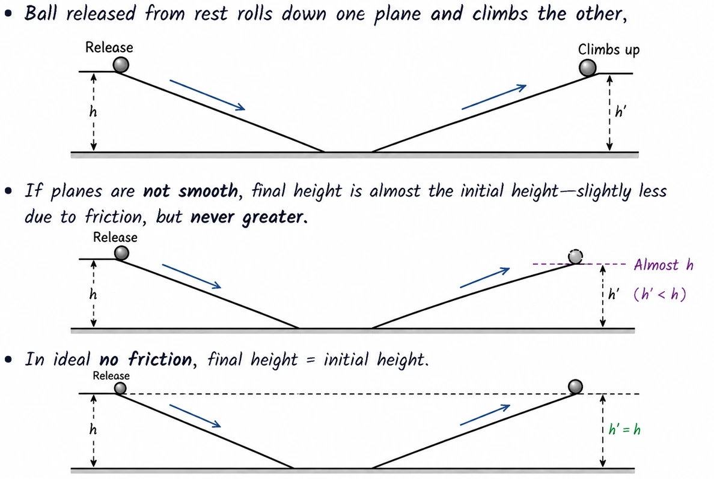
Changing the second plane’s slope:
Make the second plane gentler → ball still reaches the same height, but travels a longer distance.
Limit: slope → zero (horizontal) → to reach same height, ball must travel an infinite distance.
Law of inertia (as inferred here): With no friction (and no resistive forces), a moving body on a horizontal surface keeps moving with constant velocity; its motion never ceases (idealised).
Exam wording tip: Inertia is concluded under an ideal condition (no friction). In real life, motion stops due to opposing forces, not because motion “naturally dies out”.
Laws of Motion (Inertia and Newton’s First Law)
Friction and the idea of motion without net force
In real life, an object (e.g., a ball rolling on a horizontal surface) stops after some distance because an opposing force—friction—acts on it and can’t be fully removed.If there were no friction, the ball would keep moving with constant velocity (uniform straight-line motion). This was Galileo’s key insight (fixing Aristotle’s idea).
Rest ≡ uniform straight-line motion: Rest and uniform motion in a straight line are equivalent because in both cases net external force = 0 ⇒ no acceleration.
Common mistake (exam point): It’s wrong to think a net force is needed to keep a body moving uniformly. Net force is needed only to change motion (i.e., to produce acceleration).
On Earth, to keep uniform motion we often apply a force just to balance friction, so that applied force + friction give zero net external force.
Inertia
Inertia: property of a body that makes it resist changes in its state of rest or uniform motion.A body won’t change its state of rest/uniform motion unless an external force forces it to.
Ideas on Motion in Ancient Indian Science (contextual notes)
Ancient Indian thinkers gave a detailed classification of causes/types of motion:
Force due to continuous pressure : e.g., wind pushing a sailing boat.
Impact: e.g., a potter’s rod striking a wheel.
Persistent tendency: including:
tendency to move in a straight line, and
restoration of shape in an elastic body.
Transmitted force: through a string, rod, etc.
They also correctly noted: different motions of an extended body come from translational motion of its constituent particles:
An extended body may show translational, rotational, and vibrational motion.
Example idea: a falling leaf can move downward as a whole (patan) and also rotate/vibrate (bhraman, spandan), but each particle at an instant has only a definite small displacement.
Newton’s First Law of Motion
Historical link: Galileo to Newton
Galileo overturned Aristotelian mechanics; Newton built a new mechanics based on three laws of motion. Galileo’s idea of inertia became Newton’s starting point → written as Newton’s First Law.
Newton’s First Law (statement): Every body stays at rest or moves with uniform speed in a straight line unless an external force makes it do otherwise.
Both “rest” and “uniform straight-line motion” mean zero acceleration.
First-law condition (conceptual equation): If net external force on a body = 0, then acceleration = 0.Net external force: vector sum of all forces from outside the body.Acceleration (a): rate of change of velocity; a = 0 ⇒ velocity constant (includes the special case v = 0).
Acceleration can be non-zero only if net external force exists. If acceleration ≠ 0, then net external force ≠ 0.
How the First Law is used in practice (two situations)
Case 1: Net external force known to be zero ⇒ acceleration is zero.
Example: spaceship in deep interstellar space, far from objects, rockets off → net external force = 0 → a = 0 → if moving, keeps same uniform velocity.
Case 2: Object observed unaccelerated ⇒ net external force is zero.
On Earth, gravity is always there; motion usually has friction/drag. So if an object is at rest or moving uniformly, it’s typically because forces cancel out giving zero net external force—not because forces are absent.
Book at rest on a table: normal reaction and correct reasoning
A book at rest on a horizontal table has two external forces:
Weight (W): gravitational force downward.
Normal force (R): upward force from the table on the book.
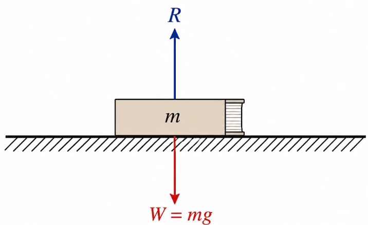
Normal force (R) is self-adjusting: it takes whatever value is needed (within limits) to satisfy contact + equilibrium/acceleration conditions.
Since the book is seen to be at rest, First Law ⇒ net external force = 0 ⇒ R = W in magnitude and opposite in direction.
Common incorrect reasoning (do NOT write this in exams): “Since W = R, forces cancel and therefore the book is at rest.”Correct reasoning: “Since the book is observed to be at rest, net external force must be zero (First Law). Hence R must be equal and opposite to W.”
Car motion on a road: acceleration requires an external force
Car starts from rest, speeds up (pick-up), then moves with uniform speed on a smooth straight road:
When stationary: net force = 0.
During pick-up: it accelerates ⇒ must have a net external force.
At constant velocity: net external force = 0 again.
Key exam point: Car’s acceleration cannot be due to any internal force (forces inside the car). To accelerate the car as a whole, you need an external force.Along the road, the only possible external force is friction. So the frictional force accelerates the car as a whole.(Details of friction come later; point here: external friction provides the forward push.)
Inertia in everyday life: starting/stopping bus and apparent “throwing”
Sudden start of a bus: person standing feels “thrown” backward.
If there were no friction between feet and floor: person tends to stay where they were (inertia) while the floor moves forward; bus back would hit them.
In reality, friction exists: it accelerates the feet with the bus (if acceleration is not too large).
Body is deformable (not perfectly rigid): feet go with bus, but rest of body tends to stay due to inertia → relative to the bus, person lurches backward.
Then muscular (internal) forces transmitted from the feet bring the rest of the body into motion with the bus.
Sudden stop of a bus: person feels “thrown” forward.
Feet stop due to friction with the floor (no slipping).
Rest of body keeps moving forward due to inertia → person lurches forward.
Muscular restoring forces then bring the body to rest.
Example 4.1: Astronaut separated from an accelerating spaceship
Problem: An astronaut gets separated from a small spaceship accelerating in interstellar space at constant 100 m s–2. Find astronaut’s acceleration immediately after he is outside. Assume no nearby stars pull gravitationally.Given/assumptions:
No nearby stars → negligible external gravitational force on astronaut.
Spaceship’s gravitational pull negligible.
After separation: no contact force from the spaceship.
Reasoning (First Law): With negligible external forces, net external force on astronaut = 0 ⇒ astronaut’s acceleration = 0 just after separation.
Result: astronaut’s acceleration immediately after leaving spaceship = 0 m s–2.Interpretation: astronaut keeps the velocity he had at separation, while the spaceship keeps accelerating away.
SECOND LAW OF MOTION
Force, time of action, and change in momentum (impulse idea from catching a ball)
To stop (or deflect) a moving object, its momentum must change. The force needed depends on (i) how much momentum changes and (ii) how fast that change happens.
Cricket catch example: A skilled cricketer pulls hands backward while catching → increases stopping time → same Δmomentum spread over longer time → smaller force. A beginner keeps hands rigid → stops ball quickly → much larger force → pain/injury.
Conclusion: Same Δmomentum, less time ⇒ more force. In words: greater rate of change of momentum ⇒ greater force.
Observation leading to Newton’s Second Law (same force, same time ⇒ same change in momentum)
Apply a fixed force for the same time interval to two bodies of different masses, both starting from rest:
The lighter body gets a higher speed than the heavier one.
But after the same time, each is observed to have the same momentum.
Key inference:Same force acting for same time → same change in momentum, whatever the mass. (Big clue for 2nd law.)
Newton’s Second Law of Motion: statement and scope
First law = special case: net external force = 0. Second law = general case: there is a net external force, and it links force to acceleration via momentum change.
Momentum: definition and significance
Momentum: p = m v p = momentum (vector)m = mass of bodyv = velocity (vector)
Momentum is a vector (same direction as velocity). It’s a key variable for describing how force affects motion.
Mass matters:
To push a loaded truck to some speed in a given time needs a bigger force than for a small car.
To stop a heavier moving body in the same time (same speed) needs a greater opposing force than for a light body.
Catching a heavy stone dropped from height is harder than a light stone → mass strongly affects force impact.
Speed matters: A fast bullet penetrates much more than the same bullet at moderate speed; for same mass, higher speed needs more opposing force to stop in a given time.
Together: Since force effect depends on both mass and velocity, m v is the relevant quantity. Bigger Δmomentum in same time ⇒ bigger force needed.
Momentum as a vector: changing direction requires force (uniform circular motion example)
Force is needed to change momentum magnitudeand to change momentum direction (because momentum is a vector).
Stone on a string in a horizontal circle: At uniform speed, momentum magnitude stays constant, but its direction keeps changing.
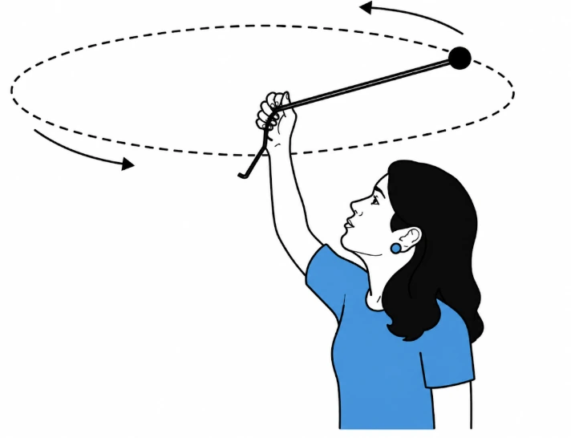
So the momentum vector changes → a force is required. Here, force is supplied by the hand via the string.
Experience-based trend: You feel a greater force when:
speed is higher,
radius is smaller,
or both.
This matches greater acceleration i.e. greater rate of change of momentum vector.
Newton’s Second Law: proportionality form and mathematical statement
Newton’s Second Law (words): Rate of change of momentum is directly proportional to the applied force, and happens in the direction of the force.
Let a force F act for time Δt on mass m:
velocity changes from v to v + Δv
initial momentum: p = m v
change in momentum: Δp = m Δv
Second law (proportionality): F ∝ Δp/ΔtF = applied/net external force (vector)Δp = change in momentum (vector)Δt = time interval of action
With constant k: F = k (Δp/Δt)k = proportionality constant (depends on unit choice)
As Δt → 0, average rate becomes instantaneous: Δp/Δt → dp/dt.
Differential form: F = k (dp/dt) (Eq. 4.2)dp/dt = time rate of change of momentum (vector)
Second law for constant mass: connection to acceleration
For constant mass m: dp/dt = d(mv)/dt = m (dv/dt) = m a (Eq. 4.3)
\( \vec{a} \) = acceleration (vector) = dv/dt
Hence: F = k m a (Eq. 4.4)m = massa = acceleration
Defining the unit of force; choosing k = 1
We use F = k m a to define the unit of force. Since force unit wasn’t defined earlier, we can choose k. For convenience, take k = 1.
Second law (k = 1): F = dp/dt = m a (Eq. 4.5)F = net external forcep = momentumm = mass (constant)a = acceleration
SI unit (newton): 1 N = 1 kg m s-2Definition: force that gives 1 kg an acceleration of 1 m s-2.
Important points about Newton’s Second Law
Matches first law: From F = m a, if F = 0 then a = 0. So second law agrees with first law (no net force ⇒ no acceleration).
Vector law (components): Second law is vector → equivalent to 3 scalar equations (x, y, z).
Component form: Fx = dpx/dt = m axFy = dpy/dt = m ayFz = dpz/dt = m az (Eq. 4.6)Fx, Fy, Fz = components of net external forcepx, py, pz = components of momentumax, ay, az = components of acceleration
If force is not parallel to velocity (makes an angle), it changes only the velocity component along the force direction (since acceleration is along force).
Exam tip: Treat momentum, force, acceleration as vectors. Even if speed is constant, changing direction of velocity (so momentum changes) means force ≠ 0 (e.g. circular motion).
Laws of Motion: Newton’s Second Law — Key Implications
Component of velocity normal to a force remains unchanged
If a force acts in some direction, only the velocity component along the force changes. The component of velocity perpendicular (normal) to the force stays unchanged (if no other forces act).
Projectile under gravity: force is vertical ⇒ horizontal component of velocity is constant (ignore air resistance).
Second law for a system of particles / rigid body (external vs internal forces)
Newton’s 2nd law (F = ma) for a single particle also works for a rigid body / system of particles if read correctly:
F = total (net) external force on the system.
a = acceleration of the system as a whole = acceleration of the centre of mass.
Internal forces between particles are not counted in F.
Multi-particle system: don’t include internal forces (they cancel in action–reaction pairs). Use only net external force.
Example 4.2 — Average resistive force stopping a bullet
Given: m = 0.04 kg, initial speed u = 90 m s−1, final speed v = 0, stopping distance s = 0.60 m. Find average resistive force.
Assume constant retardation to get an average force; real resistive force can vary during penetration.
Kinematics (constant a): v2 = u2 + 2asv = final speedu = initial speeda = acceleration (negative here: retardation)s = displacement over which a acts
Using v = 0:a = (v2 − u2)/(2s) = (0 − 902)/(2 × 0.6) = −6750 m s−2
Newton’s 2nd law: F = maF = net force on the body (here: average resistive force magnitude)m = massa = acceleration
Magnitude of resistive force = m|a| = 0.04 × 6750 = 270 N.
Resistive force inside the block is usually non-uniform, so 270 N is an average value (not necessarily the max/min instantaneous force).
Example 4.3 — Force from the equation of motion y = ut + (1/2)gt²
Given motion: y = ut + (1/2)gt². Find force acting on mass m.
Differentiate w.r.t. time:v = dy/dt = u + gta = dv/dt = g
Newton’s 2nd law: F = maF = net forcem = massa = acceleration
So, F = mg.
This is motion with constant acceleration due to gravity. Coordinate y is measured along the direction of g.
Impulse and Impulsive Force
Impulse: definition and meaning
Sometimes a large force acts for a very short time but still produces a finite change in momentum (e.g., ball hits wall and rebounds). Force and time are hard to measure separately, but their product is measurable.
Impulse: Impulse = Force × time duration = Change in momentum (Eq. 4.7)Impulse = product of force and the time interval of actionForce = (typically) large contact force during collision/impacttime duration = short interval over which force actsChange in momentum = final momentum − initial momentum
Impulsive force (conceptual point)
A large force acting for a short time causing a finite momentum change is an impulsive force.It’s not a special/new kind of force—just an ordinary force that is large and short-lived.
Example 4.4 — Impulse when a ball is hit back with same speed
Ball is hit straight back towards the bowler with no change in speed.
Speed = 12 m s−1 before and after, but direction reverses.
Mass m = 0.15 kg.
Take initial direction (towards batsman) as negative and final direction (towards bowler) as positive (any consistent sign convention works).Initial momentum pi = −(0.15 × 12)Final momentum pf = +(0.15 × 12)Change in momentum Δp = pf − pi = 0.15×12 − (−0.15×12) = 3.6 N s
Impulse = Δp = 3.6 N s, directed from the batsman to the bowler.Why impulse helps: contact force + contact time are hard to know, but impulse comes straight from momentum change.
If speed stays same but direction reverses, momentum change magnitude = 2mv (direction as per sign convention).
Newton’s Third Law of Motion
Origin of external force: interaction between bodies
Any external force on a body is always due to some other body → forces come from interactions.Contact example: hand compresses a spring → spring pushes back on hand.Non-contact example: Earth pulls a stone (gravity) → stone also pulls Earth. Earth’s acceleration ≈ negligible since Earth’s mass is huge.
Statement of the third law
To every action, there is always an equal and opposite reaction.In Newtonian mechanics, force never exists alone in nature → it appears as mutual interaction forces in pairs.
“Action” and “reaction” are both forces. Better wording: forces occur in pairs — force on A by B equals and is opposite to force on B by A.
No cause–effect time order. Neither comes first; both forces act simultaneously. Either one may be called action/reaction.
They act on different bodies (not the same body). So don’t add them as if they act on one body.
Mathematical form and implications for systems
Newton’s third law (pair forces): FAB = −FBA (Eq. 4.8)FAB = force on body A by body BFBA = force on body B by body A
Exam trap: don’t claim “net force = 0” on one body by adding FAB and FBA. They act on different bodies → they can’t cancel for the motion of a single body.
For the combined system (A + B): FAB and FBA are internal forces and their sum is zero → internal forces in a system of particles cancel in pairs.
LAWS OF MOTION (Impulses in collisions with a wall)
Example 4.5: Two identical billiard balls reflected from a rigid wall
If a ball hits a smooth rigid wall and reflects with no change in speed:
Only the momentum component normal to the wall reverses.
The component parallel to the wall stays unchanged.
So the impulse (and avg force) from the wall is purely normal.
The “instinct” idea that force on the wall is along the incident direction is wrong.Steps: find force/impulse on the ball due to the wall (via 2nd law), then use 3rd law to reverse direction to get force on the wall.
Impulse = change in momentum: J = ΔpJ: impulse vector given to the bodyΔp = pfinal − pinitial
Second law (impulse form): F Δt = ΔpF: (average) force during contactΔt: collision/interaction timeΔp: change in momentum
Third law: Fwall on ball = − Fball on wallFwall on ball: force by wall on ballFball on wall: force by ball on wall
Given/Setup: Each ball has mass m, speed u before + after. Axes: x normal to wall, y along wall.(i) Direction of force on the wall due to each ballKey method: find impulse (Δp) of the ball due to wall → get its direction → use 3rd law to flip direction for force on wall.Case (a): normal incidence
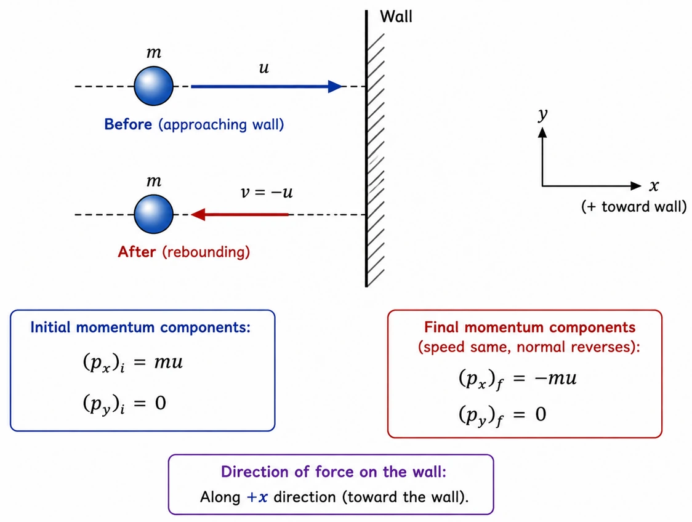
Initial momentum components:(px)initial = m u, (py)initial = 0Final momentum components (speed same, normal reverses):(px)final = − m u, (py)final = 0Impulse on ball (Δp) components:Jx = (px)final − (px)initial = −m u − (m u) = −2 m uJy = 0 − 0 = 0
Impulse (⇒ force) on the ball is along −x (normal). So by 3rd law, force on the wall due to the ball is normal along +x.
Magnitude of force needs collision time Δt. From momentum change you can get only impulse (Δp), not force magnitude.
Case (b): oblique incidence at 30° to the normal
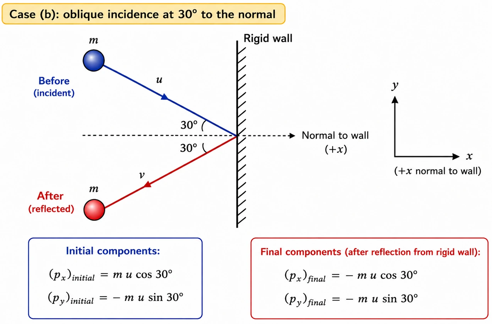
Initial components:(px)initial = m u cos 30°, (py)initial = − m u sin 30°Final components (after reflection from rigid wall):(px)final = − m u cos 30°, (py)final = − m u sin 30°
After collision: px changes sign (normal reverses) but py does not (tangential unchanged).
Impulse components:Jx = −m u cos 30° − (m u cos 30°) = −2 m u cos 30°Jy = (−m u sin 30°) − (−m u sin 30°) = 0So impulse (and force) on ball is again purely along −x (normal). Hence force on wall due to ball is along +x (normal) here too.(ii) Ratio of magnitudes of impulses imparted to the balls by the wall|Impulse| = |Δp|. Since impulse is purely along x in both cases:|J|(a) = 2 m u|J|(b) = 2 m u cos 30°Required ratio:|J|(a) / |J|(b) = (2 m u)/(2 m u cos 30°) = 1 / cos 30° = 2/√3 ≈ 1.2
Rigid wall reflection with same speed: impulse depends only on normal component of velocity = u cosθ (θ w.r.t. normal), not on total speed u.
Conservation of Momentum
Law of conservation of momentum: In an isolated system of interacting particles, the total momentum stays constant.
Derivation idea from Newton’s second and third laws (gun–bullet example)
Bullet fired from a gun. If force on bullet by gun is F, then force on gun by bullet is −F (Newton’s 3rd law). Both act for same time Δt.Newton’s 2nd law (impulse form):Impulse on bullet = F Δt = change in bullet momentumImpulse on gun = (−F) Δt = change in gun momentumIf both start from rest ⇒ initial momenta = 0, so final momenta = changes:pb = F Δt, pg = −F ΔtSo pg = − pb ⇒ pb + pg = 0 ⇒ total momentum (gun + bullet) stays constant.
In an isolated system (no external force): internal forces can change individual momenta, but they come in equal & opposite pairs, so momentum changes cancel pairwise ⇒ total momentum unchanged.
Two-body collision form (Equation 4.9)
Two bodies A and B collide. Initial momenta: pA, pB. Final momenta: p′A, p′B. During contact time Δt: force on A due to B is FAB, and on B due to A is FBA.
Impulse–momentum for each body (during collision):FAB Δt = p′A − pAFBA Δt = p′B − pBFAB: force on A due to BFBA: force on B due to AΔt: common contact timepA, p′A: initial, final momentum of ApB, p′B: initial, final momentum of B
By Newton’s 3rd law: FAB = − FBA. Hence:(p′A − pA) = −(p′B − pB)
Conservation of momentum in collision (Eq. 4.9):p′A + p′B = pA + pBpA, pB: initial momentap′A, p′B: final momenta
Momentum is conserved for elastic and inelastic collisions (if system is isolated). For elastic collisions, extra condition: total kinetic energy is also conserved (later).
Equilibrium of a Particle
Equilibrium of a particle: net external force on the particle is zero. By Newton’s 1st law ⇒ particle is either at rest or moving with constant velocity.
For a body (extended object), equilibrium needs: (i) net force = 0 (translational) and (ii) net torque = 0 (rotational). Here: only particle equilibrium (force balance).
Equilibrium under two forces (Equation 4.10)
Two-force equilibrium (Eq. 4.10): F1 = − F2F1, F2: the two forces on the particle
Meaning: forces are equal magnitude and opposite direction.
Equilibrium under three concurrent forces (Equations 4.11, 4.12)
Three-force equilibrium (Eq. 4.11): F1 + F2 + F3 = 0F1, F2, F3: three concurrent (meet at one point) forces
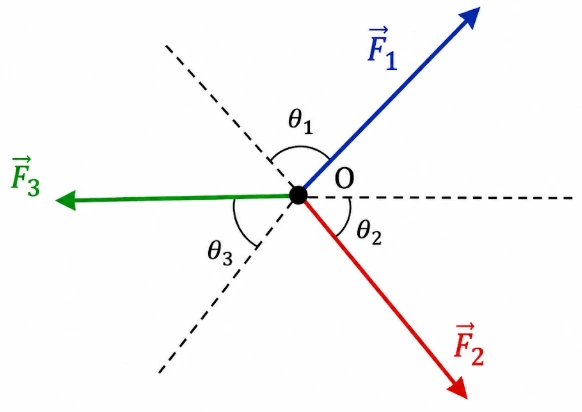
Geometrical meaning: Resultant of any two (via parallelogram law) must be equal and opposite to the third. So in equilibrium, the 3 vectors can be drawn head-to-tail as sides of a triangle (arrows in same sense).
Generalisation: A particle is in equilibrium under F1, F2, …, Fn if the vectors form a closed n-sided polygon with arrows in the same sense (polygon law for equilibrium).
Component form of Eq. (4.11) (Eq. 4.12):F1x + F2x + F3x = 0F1y + F2y + F3y = 0F1z + F2z + F3z = 0F1x, F1y, F1z: components of F1 along x, y, z (similarly for F2, F3)
Equilibrium: write vector sum = 0 first, then resolve into components along convenient axes. Sign mistakes (wrong +/− directions) are the classic trap.
Example 4.6: Mass suspended by a rope with a horizontal force at the midpoint
Problem: A 6 kg mass hangs from ceiling by a light rope of length 2 m. A horizontal force of 50 N is applied at midpoint P. Find the angle the rope makes with the vertical in equilibrium. Take g = 10 m s−2. Neglect rope mass.
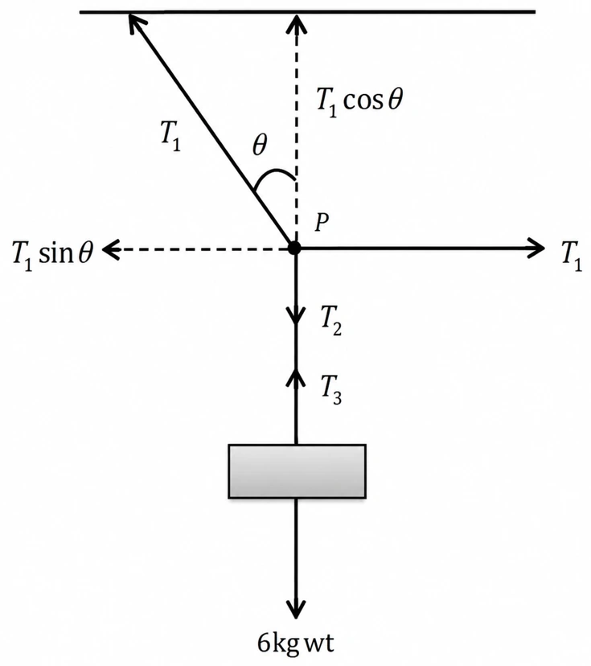
Set up using particle equilibrium at P and/or at the mass: at equilibrium, net force = 0, so the vector sum of tensions + applied forces must balance. (Working continues later.)
LAWS OF MOTION (Worked equilibrium example: free-body diagrams and tensions)
Free-body diagram (FBD): draw the body/point isolated, with all external forces shown as vectors.
FBD of the weight W.
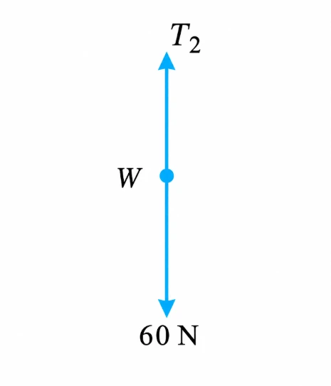
FBD of point P (junction point).
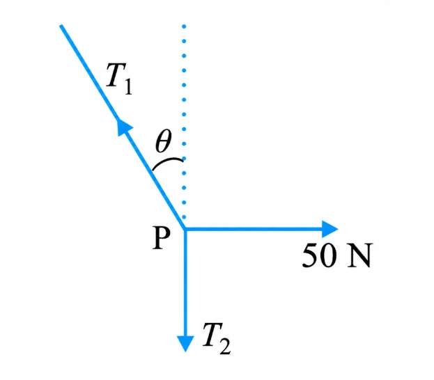
Equilibrium condition: net force = 0. In 2-D equilibrium: resultant horizontal component = 0 and resultant vertical component = 0 (separately).
Step 1: Equilibrium of weight W.From FBD of W: tension balances weight. Mass = 6 kg, so
Weight: W = mgW: weight (N)m: mass (kg)g: acceleration due to gravity (m s−2), here g = 10
So vertical rope tension:T2 = 6 × 10 = 60 N.Step 2: Equilibrium of point P under three forces.At P, three forces: tensions T1 and T2, plus horizontal 50 N.Resolve and set component sums to zero:
Equilibrium at P (components = 0 separately):T1 cosθ = T2 = 60 NT1 sinθ = 50 NT1: tension in inclined segment (N)T2: tension in vertical segment (N)θ: angle made by T1 with horizontal/vertical as defined in the figure (use these relations exactly)
From these: get T1 and θ (e.g. square+add: T1 = √(602 + 502); divide: tanθ = 50/60).
Exam tip: This result does not depend on (i) rope length (massless rope) or (ii) where along the rope the horizontal force is applied. Only force balance at the junction matters.
COMMON FORCES IN MECHANICS
Gravitational force vs contact forces
Gravitational force: acts on every object near Earth (also controls celestial motion). It’s a non-contact force → can act at a distance with no medium.
Contact forces: come from physical contact (solid–solid or solid–fluid). Forces occur in equal & opposite pairs (fits Newton’s 3rd law).
Normal reaction (N): part of the contact force perpendicular to the surfaces.Friction: part of the contact force parallel to the surfaces.
Contact forces involving fluids:
Buoyant force: for a solid in a fluid → an upward force = weight of fluid displaced.
Viscous force, air resistance (drag), etc. are also contact forces.
Tension and spring force
Spring force (restoring force): compress/extend a spring → restoring force produced; for small displacements, force ∝ displacement.
Hooke’s law (spring force): F = −kxF = restoring force by spring (N)k = spring (force) constant (N m−1)x = displacement from unstretched (natural) length (m)Negative sign: force is opposite to displacement (towards equilibrium).
Inextensible string: effectively has a very large force constant (very stiff).
Tension (T): restoring force transmitted along a string.
Massless string assumption: if string mass ≈ 0, tension is taken constant throughout the string.
Fundamental forces and microscopic origin of contact forces
There are four fundamental forces. For macroscopic mechanics here, mainly gravitational + electrical matter.
Strong and weak forces act in domains not needed for typical mechanics questions.
Most contact forces (normal reaction, friction, elasticity, collision forces, etc.) ultimately come from electrical forces between charged parts of matter (nuclei + electrons).
Even if bodies are uncharged/non-magnetic macroscopically, microscopically they contain charges; charge–charge interactions produce macroscopic contact effects (elasticity, impacts, molecular collisions, etc.).
The microscopic origin is complicated and not used directly in standard mechanics problem-solving → treat contact forces as separate force types with properties found empirically (from experiments).
Scope note: charged/magnetic bodies can also feel electrical/magnetic non-contact forces; ignored here for simplicity.
FRICTION
Static friction: origin and behaviour
Body of mass m at rest on a horizontal table:
Weight mg down is balanced by normal reaction N up.
Now apply a horizontal force F:
If F were the only horizontal external force, the body would accelerate at F/m (even if F is tiny).
In reality, for small F the body can stay at rest because friction appears to oppose it.
Frictional force (friction): contact force parallel to the surfaces that opposes relative motion (or the tendency to move).
Static friction (fs): when surfaces are not sliding.
Kinetic/sliding friction (fk): when sliding happens (below).
Static friction doesn’t exist “on its own”: if there’s no applied tangential force, static friction is 0.
As applied F increases from 0, fs increases to match it (same size, opposite direction) until a maximum, keeping the body at rest.
Static friction opposes impending motion (the motion that would occur without friction).
Limiting static friction and its laws
From experiments, the maximum (limiting) static friction:
is independent of area of contact
is roughly proportional to the normal reaction N
Limiting static friction: (fs)max = μs N (Eq. 4.13)(fs)max = maximum possible static friction (N)μs = coefficient of static friction (dimensionless), depends only on nature of surfacesN = normal reaction (N)
Law of static friction: fs ≤ μs N (Eq. 4.14)fs self-adjusts up to the limit; it’s not always equal to μsN.
Common mistake: writing fs = μsN every time. Correct: fs ≤ μsN, with equality only at impending motion.
Kinetic (sliding) friction and its laws
When applied force exceeds (fs)max, the body slides. Experiments show:
Friction drops from max static value once motion starts.
Kinetic friction is independent of area of contact.
Kinetic friction is nearly independent of velocity (in basic models).
Usually μk < μs.
Kinetic (sliding) friction (fk): friction that opposes relative sliding motion between surfaces in contact.
Law of kinetic friction: fk = μk N (Eq. 4.15)fk = kinetic friction force (N)μk = coefficient of kinetic friction (dimensionless), depends only on surfacesN = normal reaction (N)
Using Newton’s second law with friction
Once sliding begins under a horizontal applied force F, net horizontal force = F − fk, so
Acceleration during sliding: a = (F − fk)/ma = acceleration (m s−2)F = applied force (N)fk = kinetic friction (N)m = mass (kg)
Constant velocity: a = 0 ⇒ F = fk.
If applied force is removed (F = 0): a = −fk/m → body slows and stops.
Status of friction laws: these are empirical (observed), not fundamental like gravitational/electric/magnetic force laws.
Laws of Motion: Friction (continued)
Contact force: when 2 bodies touch, each pushes/pulls on the other (contact force).Friction: the part of contact force parallel to the surfaces that opposes impending/actual relative motion between them.Key idea: friction opposes relative motion (not “motion” in absolute terms).
Static friction in an accelerating train: why the box moves with the train
Box on the floor of a train accelerating forward.
If the box stays at rest relative to the train, it is still accelerating in the ground frame (same as train).
If no other agent acts, the only possible horizontal force on the box is friction.
If there were no friction, the floor would slide under the box; due to inertia the box tends to keep its state of motion → appears to move backward relative to train and hit the rear side.
This impending relative motion is opposed by static frictionfs, which adjusts as needed up to a max.
Static friction is self-adjusting: it takes the value needed to prevent slipping, as long as it stays below its maximum.
Example 4.7: Maximum train acceleration for no slipping
Given: µs = 0.15. Find max train acceleration so the box doesn’t slip.Horizontal acceleration of the box is provided by static friction:
Newton’s 2nd law (box): m a = fsMax static friction: fs ≤ µs NNormal on level floor: N = m gSo: m a ≤ µs m g ⇒ a ≤ µs gSymbols: a = acceleration of train/box; fs = static friction; µs = coefficient of static friction; N = normal reaction; m = mass; g = acceleration due to gravity.
Maximum acceleration:amax = µs g = 0.15 × 10 m s−2 = 1.5 m s−2
Don’t write fs = µsN automatically. Use fs ≤ µsN; equality only at the slipping threshold / maximum acceleration case.
Example 4.8: Block on an incline—finding µs from the angle of impending slip
Given: 4 kg block on a plane. Tilt until at θ = 15° the block just starts to slide. Find µs.Forces on block:
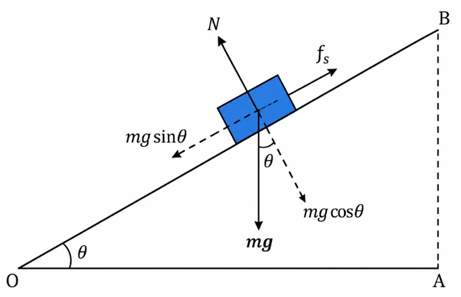
Weight mg downward
Normal reaction N ⟂ to plane
Static friction fs up the plane (opposes impending downward slip)
At rest (equilibrium): net force = 0. Resolve mg:
Along plane: m g sinθ = fsPerpendicular: m g cosθ = NSymbols: θ = inclination angle; fs = static friction; N = normal; m = mass; g = gravitational acceleration.
Increase θ ⇒ required fs increases, until max static friction at θ = θmax:
At impending slip: fs,max = µs NSo: m g sinθmax = µs (m g cosθmax)Therefore: tanθmax = µsEquivalently: θmax = tan−1(µs)Symbols: θmax = angle when slipping just begins; µs = coefficient of static friction.
For θmax = 15°:µs = tan 15° = 0.27
Angle of repose: θmax depends only on µs and is independent of mass (m cancels).
Example 4.9: Block–trolley system with kinetic friction
System (Fig. 4.12): 3 kg block hangs over a smooth pulley, connected to a 20 kg trolley on a horizontal surface. µk = 0.04. Take g = 10 m s−2. String mass negligible.
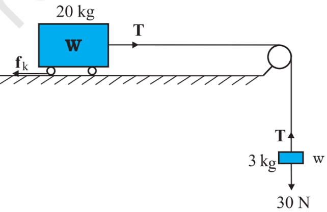
Constraints:
Inextensible string ⇒ both bodies have the same magnitude of acceleration.
Smooth pulley ⇒ tension is the same everywhere in the string.
Take 3 kg moving down and 20 kg trolley moving right with acceleration a; tension = T.For the 3 kg block (Fig. 4.12(b)):
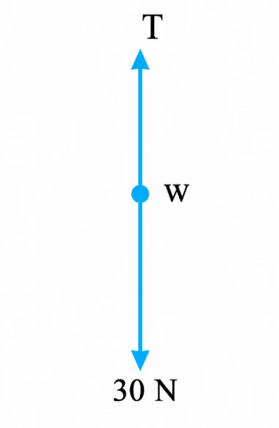
Weight − tension = m a30 − T = 3 aSymbols: T = tension; a = acceleration; weight = mg = 3×10 = 30 N.
For the 20 kg trolley (Fig. 4.12(c)):
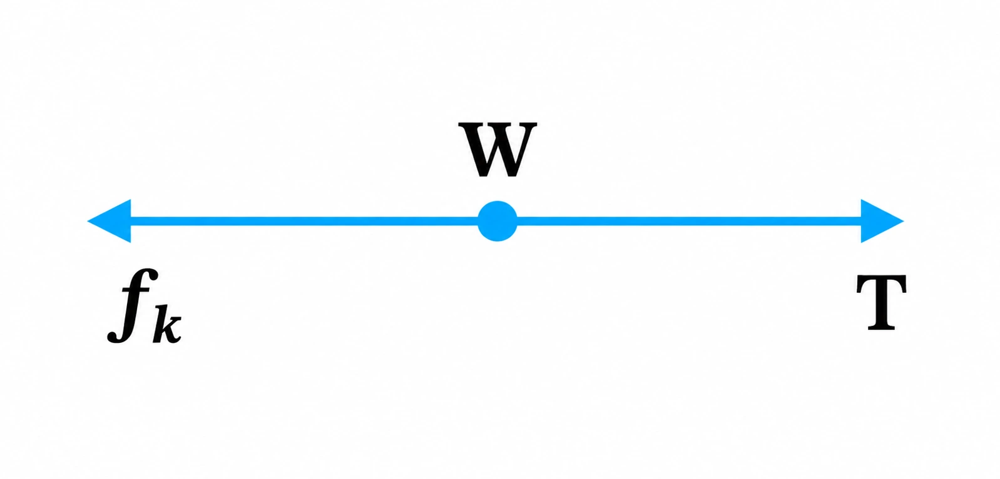
T − fk = 20 aKinetic friction: fk = µk NNormal on level surface: N = 20×10 = 200 NThus fk = 0.04×200 = 8 NSo: T − 8 = 20 aSymbols: fk = kinetic friction; µk = coefficient of kinetic friction; N = normal reaction.
Solve:
30 − T = 3a
T − 8 = 20a
Add: 22 = 23a ⇒ a = 22/23 m s−2 = 0.96 m s−2Then T = 30 − 3a = 30 − 66/23 = 27.1 N
On the trolley, friction opposes the actual relative motion. Trolley moves right ⇒ friction on trolley acts left.
Rolling friction
Ideal rolling without slipping (ring/sphere on horizontal plane): at any instant only one contact point, and it has no relative motion w.r.t. the surface. So (in principle) static & kinetic friction can be zero → rolls at constant speed.
Reality: rolling bodies slow down; a resistive effect called rolling friction acts, so an external force is needed to keep them rolling.Origin (qualitative): slight deformation during rolling → contact is over a finite area (not a point). Net effect: a contact-force component parallel to surface that opposes motion.
For the same weight, rolling friction ≪ static/sliding friction (often by 2–3 orders of magnitude). That’s why the wheel is a huge milestone.
Reducing friction: practical methods
Lubricants: reduce kinetic friction between moving machine parts.
Ball bearings: replace sliding with rolling; rolling friction is small ⇒ less power loss.
Air cushion: thin compressed air layer between surfaces in relative motion → very effective friction reduction.
When friction is desirable (applications)
Kinetic friction dissipates energy (often “undesirable”) but is useful in brakes to stop quickly.
Walking needs static friction with the ground.
A car can’t move on a very slippery road: not enough friction available.
On a normal road, tyre–road friction provides the external force to accelerate the car.
Circular Motion
Centripetal acceleration and centripetal force
Uniform circular motion (radius R, speed v) ⇒ acceleration points toward the centre.
Centripetal acceleration: ac = v2/R (towards centre)Centripetal force: fc = m v2/R (Eq. 4.16)Symbols: fc = centripetal force; m = mass; v = speed; R = radius of circular path.
Centripetal force is NOT a new force type — it’s just the net inward force that keeps an object moving in a circle.
Stone in a circle → centripetal force = tension in the string
Planet around Sun → centripetal force = gravitational force
Car turning on a level road → centripetal force = friction
Motion of a car on a level road
Car turning on a flat road has forces:
Weight mg (down)
Normal reaction N (up)
Friction f along road surface
No vertical acceleration ⇒ vertical forces balance:
N − mg = 0 ⇒ N = mg (Eq. 4.17)Symbols: N = normal reaction; m = mass; g = acceleration due to gravity.
Centripetal force needed is horizontal, provided by friction. For no skidding, it’s static friction and must satisfy f ≤ µsN.
Required: f = m v2/RAvailable: f ≤ µs NUsing N = mg: m v2/R ≤ µs m gSo: v2 ≤ µs R gSymbols: v = speed; R = turn radius; µs = coefficient of static friction.
Maximum safe speed on a level road:
vmax = √(µs R g) (Eq. 4.18)Symbols: vmax = maximum speed without skidding; µs = coefficient of static friction; R = radius of turn; g = acceleration due to gravity.
This is independent of car mass (m cancels). Here, static friction opposes the impending motion away from the circle → so it acts toward the centre to stop outward slipping.
Motion of a car on a banked road
Banking reduces how much you rely on friction (Fig. 4.14(b)). Let θ be the banking angle. Forces: weight mg, normal N (⊥ road), friction f along the surface.No vertical acceleration ⇒ net vertical component = 0:
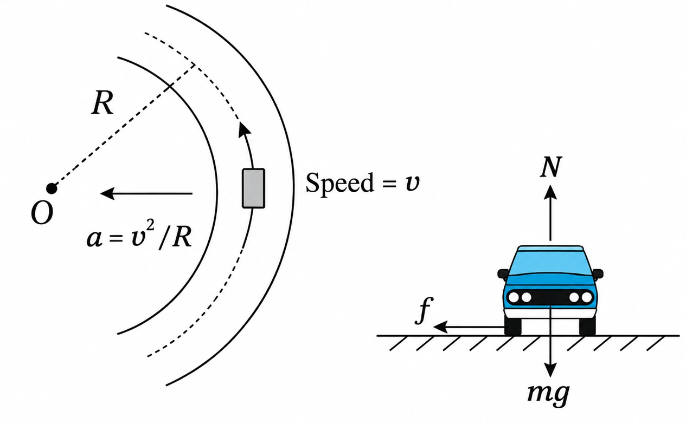
Vertical balance: N cosθ = mg + f sinθ (Eq. 4.19a)Symbols: N = normal reaction; θ = banking angle; f = frictional force; m = mass; g = gravitational acceleration.
Centripetal force comes from horizontal components of N and f:
Horizontal (toward centre): N sinθ + f cosθ = m v2/R (Eq. 4.19b)Symbols: v = speed; R = radius of turn; other symbols as above.
For static friction, limiting condition:
f ≤ µs NTo get vmax, take the limit: f = µsNSymbols: µs = coefficient of static friction.
Substitute f = µsN into Eqs. (4.19a) and (4.19b):
N cosθ = mg + µs N sinθ (Eq. 4.20a)Symbols: as defined above.
Banked-road Qs: resolve forces into vertical (no acceleration) + horizontal (centripetal). Then apply f ≤ µsN. For maximum speed, use the limiting case f = µsN.
Maximum speed on a banked road with friction
Radial (centripetal) force balance on a banked road with friction (Eq. 4.20b):N sinθ + μsN cosθ = mv²/RN = normal reaction (road on vehicle)θ = banking angleμs = coefficient of static friction (tyres–road)m = mass of vehiclev = speed of vehicleR = radius of circular turn
Use the companion relation (Eq. 4.20a) to eliminate N. Substitute into Eq. (4.20b) to get the maximum speed when friction is at its limiting value.
Maximum speed on a banked road with friction (Eq. 4.21):vmax² = Rg (tanθ + μs) / (1 − μstanθ)vmax = max speed without slippingR = radius of circular pathg = acceleration due to gravityθ = banking angleμs = coefficient of static friction
Compare with flat (unbanked) road: From Eq. (4.21) vs unbanked result (Eq. 4.18), the max possible speed on a banked road is higher than on a flat road (same μs, R).
Optimum speed on a banked road (no friction needed) (Eq. 4.22; set μs = 0 in Eq. 4.21):v0 = √(Rg tanθ)v0 = speed where friction is not needed for centripetal forceR = radius of turng = acceleration due to gravityθ = banking angle
Meaning of “optimum speed” v0: When v = v0, the horizontal component of N alone supplies the centripetal force ⇒ friction = 0.
Practical significance: Driving at v = v0 gives minimal tyre wear (no friction needed).
Friction direction for v < v0: friction acts up the slope.
Parking condition on a banked road: car can be parked only if tanθ ≤ μs.
Don’t assume friction always acts down the slope on a banked road. Direction depends on whether the vehicle tends to slide up/down the bank relative to the road: for v < v0, it acts up the slope.
Example 4.10: Cyclist turning on a level road (unbanked)
Given: v = 18 km/h, R = 3 m, μs = 0.1, g = 9.8 m s−2.
On an unbanked road, static friction only provides centripetal force. If required centripetal force > max static friction, the vehicle slips.
No-slip condition on a level road (Eq. 4.18):v² ≤ μs R gv = speedμs = coefficient of static frictionR = radius of turng = acceleration due to gravity
μsRg = 0.1 × 3 × 9.8 = 2.94 m² s−2.
Convert speed: 18 km/h = 5 m s−1 ⇒ v² = 25 m² s−2.
Check: 25 ≤ 2.94 ❌ (false).
Conclusion: Cyclist will slip on the turn (needed centripetal force > what static friction can supply).
Example 4.11: Banked racetrack — optimum speed and maximum speed
Given: R = 300 m, θ = 15°, μs = 0.2, g = 9.8 m s−2.(a) Optimum speed (no wear and tear): at optimum speed, friction not required.
Substitute ⇒ v0 = 28.1 m s−1.(b) Maximum permissible speed to avoid slipping: use Eq. (4.21).
Maximum permissible speed on a banked road (Eq. 4.21):vmax² = Rg (tanθ + μs) / (1 − μstanθ)R = radius of trackg = acceleration due to gravityθ = banking angleμs = coefficient of static friction
In banked-road questions, keep these separate:
v0: speed needing no friction.
vmax: speed where friction is at its limiting value; above this → slip.
Solving problems in mechanics
Foundation: Newton’s 3 laws = the base of all mechanics problems.Realistic systems: Often you’ve got an assembly of bodies pushing/pulling each other + each has weight.
System vs environment: Pick any part of the assembly as the system and use Newton’s laws on it, as long as you include all external forces on that system due to:
the rest of the assembly, and
other agencies (e.g. gravity, supports).
The rest (remaining assembly + other agencies) = the environment.
Systematic steps (free-body diagram method)
Sketch the overall setup: bodies, links, supports, contacts, etc.
Choose a convenient system (some part of the assembly).
Draw the FBD of that system showing:
the system alone, and
all forces on the system from the rest of the assembly + other agencies (e.g. weight).
Do NOT include forces on the environment by the system.Note: “Free-body” ≠ net force is zero.
On the FBD, put in force info that’s given/certain (size/direction). Example: tension acts along the string. Everything else = unknowns to solve using Newton’s laws.
If needed, redo with a different system and keep Newton’s 3rd law consistent:If in A’s FBD the force on A due to B is F, then in B’s FBD the force on B due to A is −F.
Common FBD errors:
Mixing forces on the system with forces by the system (breaks step 3).
Including internal forces even though your chosen system already contains both interacting bodies.
Forgetting 3rd-law pairs: equal size, opposite direction, and act on different bodies.
Example 4.12: Block on floor + cylinder placed on block; action on floor; action-reaction pairs
Given: block mass = 2 kg, cylinder mass = 25 kg, g = 10 m s−2. When cylinder is placed, floor yields and (block + cylinder) accelerate downward with a = 0.1 m s−2.(a) Action of the block on the floor before the floor yields
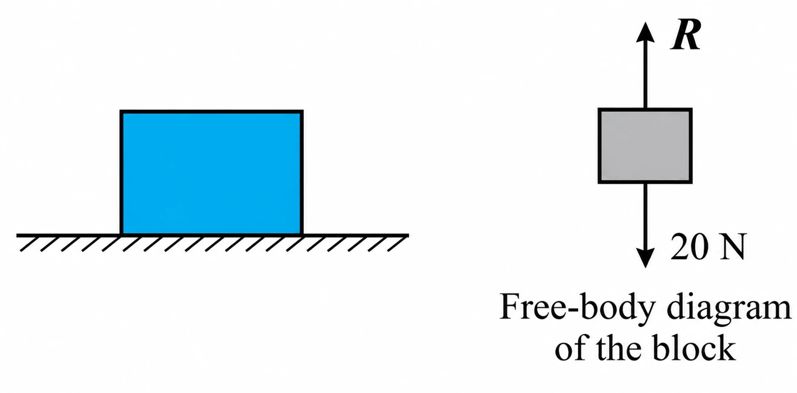
System: block only, at rest.
Forces on block (FBD):
Weight of block = 2g = 2 × 10 = 20 N downward (Earth on block).
Normal reaction from floor on block = R upward.
Newton’s 1st law (rest): net force = 0 ⇒ R = 20 N.
Action of block on floor: by Newton’s 3rd law, force by block on floor = 20 N, vertically downward.
(b) Action of the block+cylinder system on the floor after the floor yields
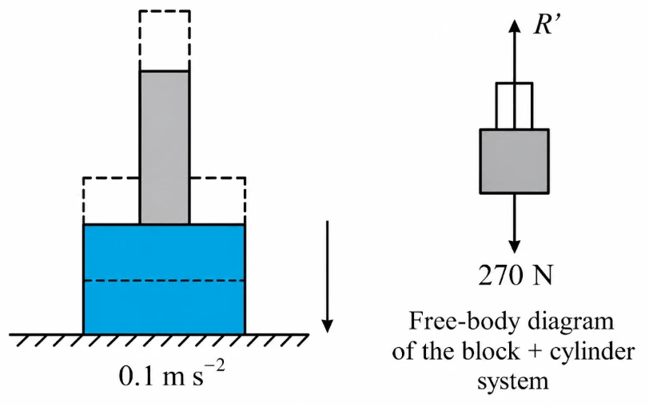
System: (block + cylinder) together.
Key FBD point: block–cylinder forces are internal here → don’t draw them.
External forces on system:
Total weight = (2 + 25)g = 27 × 10 = 270 N downward.
Normal reaction from floor on system = R′ upward.
Newton’s 2nd law (acceleration downward a = 0.1):
2nd law vertically (take downward +):270 − R′ = 27 × 0.1270 N = total weight of systemR′ = normal reaction (floor on system)27 kg = total mass0.1 m s−2 = downward acceleration
So R′ = 267.3 N.
Action of system on floor (after yielding): by Newton’s 3rd law, force by system on floor = 267.3 N vertically downward.
Identify action–reaction pairsFor (a):
(i) Gravity pair: gravity (20 N) on block by Earth (action); gravity on Earth by block (reaction) = 20 N upward (not shown in figure).
(ii) Contact pair: force on floor by block (action); force on block by floor (reaction).
For (b):
(i) Gravity pair: gravity (270 N) on system by Earth (action); gravity on Earth by system (reaction) = 270 N opposite direction.
Newton’s Third Law of Motion: Action–Reaction Forces
Newton’s 3rd law: For every action, there is an equal and opposite reaction.Meaning: forces come in pairs between two bodies. If A pushes/pulls B, then B pushes/pulls A at the same time, same size, opposite direction.
Properties of action–reaction forces:
Equal magnitude, opposite direction.
Different bodies (never on the same body).
Simultaneous (no delay).
No cause/effect: either can be called “action”.
Do not cancel (cancelling needs forces on the same body).
Internal forces inside a system add to zero when treating the whole system.
Most common exam trap: Two forces on the same body that are equal and opposite are not a 3rd-law pair.Trap example: block at rest on floor → weight (Earth on block) and normal (floor on block) may be equal/opposite, but not a 3rd-law pair since both act on the block.3rd-law partner of the block’s weight = gravity by block on Earth.3rd-law partner of the normal (floor on block) = normal by block on floor.
Illustrative identification of pairs (as described in the text):
Force on the floor by the system (action) + force on the system by the floor (reaction) = a 3rd-law pair.
For block + cylinder contact: force on block by cylinder + force on cylinder by block = a 3rd-law pair.
Numerical note from the text: Earlier, weight of system = 270 N but normal force = R′ = 267.3 N. So two forces on the same body don’t have to be equal/opposite (and anyway they’re not an action–reaction pair).
Free-Body Diagrams (FBDs) in Mechanics
Free-body diagram (FBD): a sketch of a clearly chosen system showing all forces acting on it from things outside the system.
Why FBDs matter:
Forces you to define the system (particle/body/collection).
Makes you include only external forces on that system.
Main tool for solving mechanics problems cleanly + systematically.
FBD exam tip: Don’t mix forces from different bodies into one force balance. Draw separate FBDs if needed (block vs floor vs Earth, etc.).